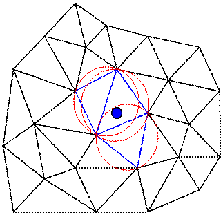
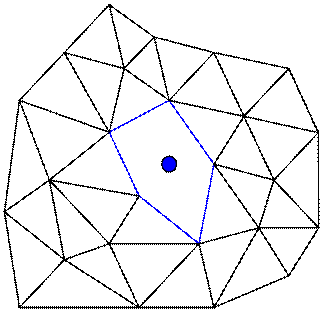
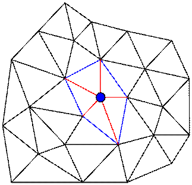

・デローニ
デローニ分割は、メッシュを作成する方法の1つである。節点を1つずつ領域に追加することで
メッシュが作成されていく。ここでは3角形要素を用いて領域に節点を追加してメッシュが作成されるプロセスを示してみる。
下図の様に領域に節点を1つ追加する。
次に各要素の外接円を描いて、追加した節点が外接円に含まれる要素を探す。

外接円に節点を含む要素で作られる多角形ができあがる。

この多角形の各頂点と節点を直線で結ぶと新たな要素が出来上がる。

4面体要素を用いる場合は、節点を外接球に含む要素を探すことになる。